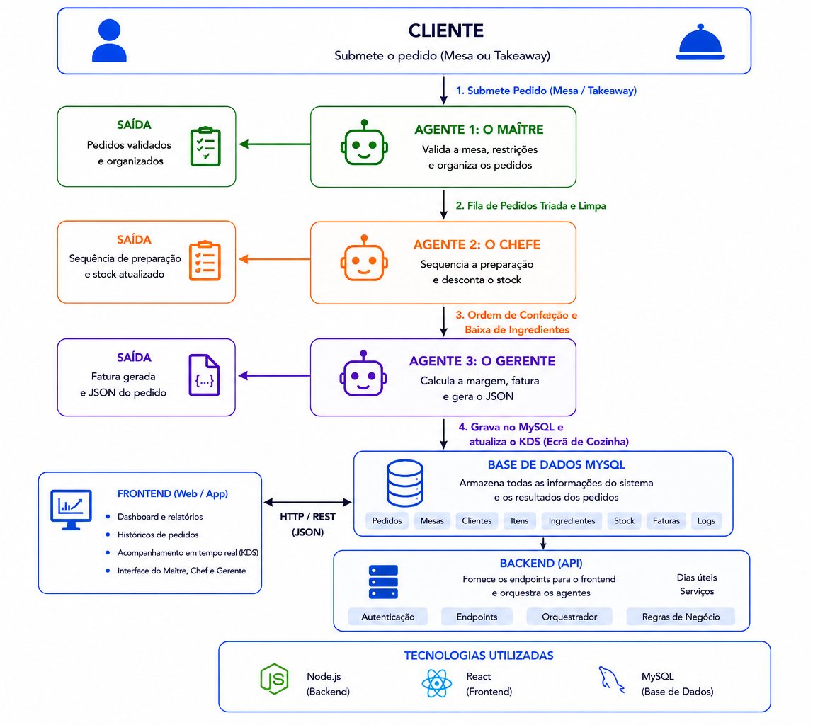
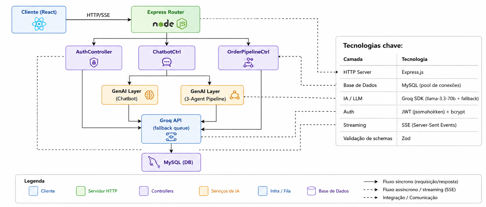
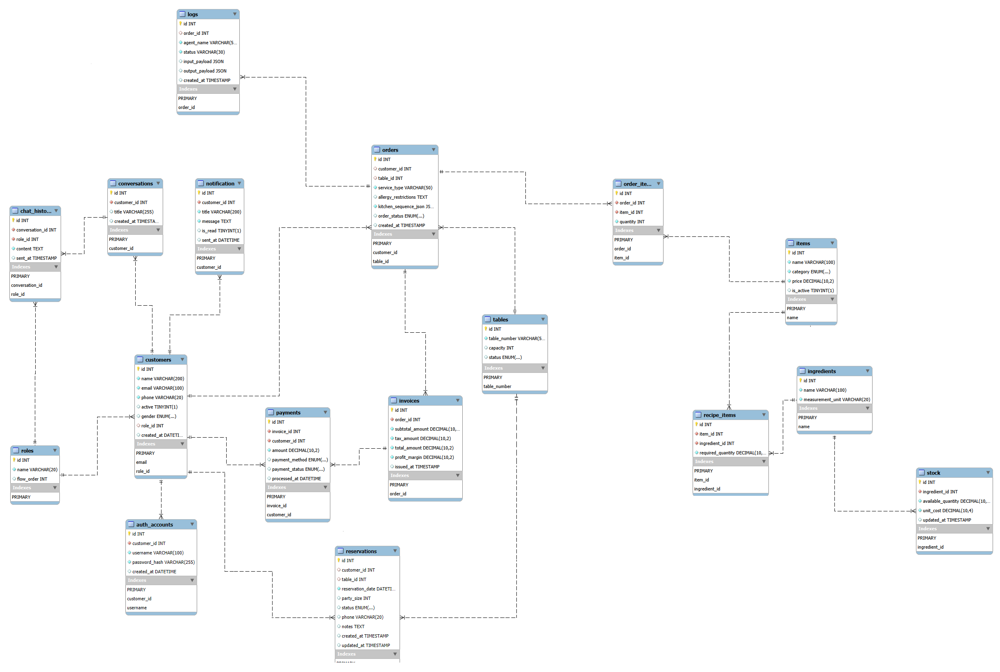
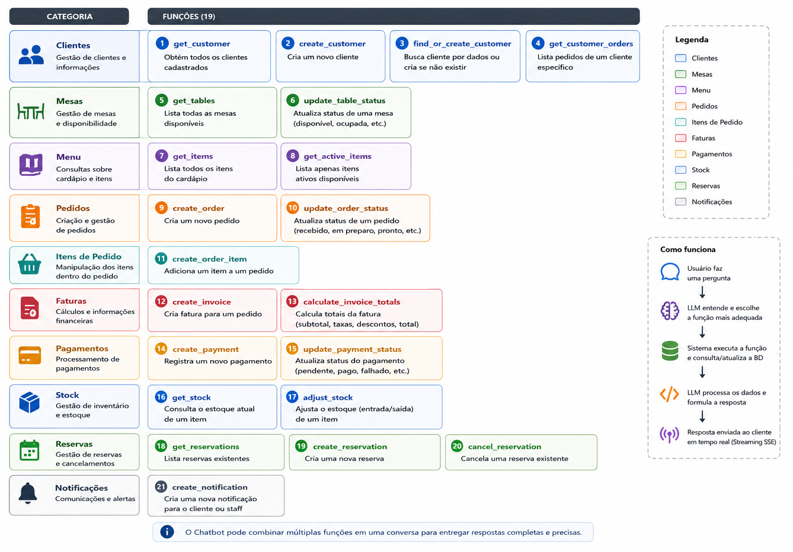
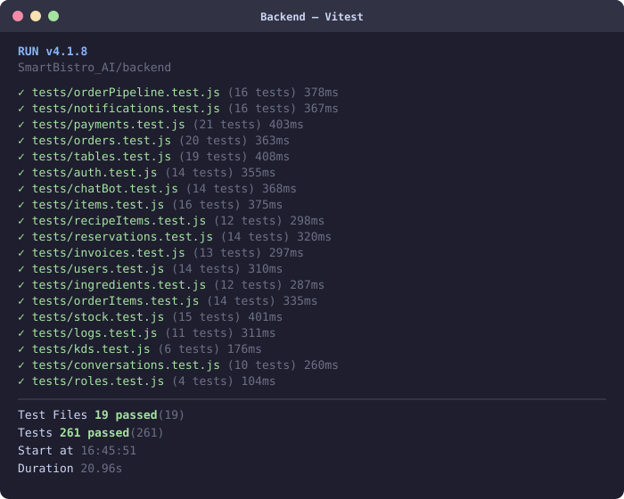
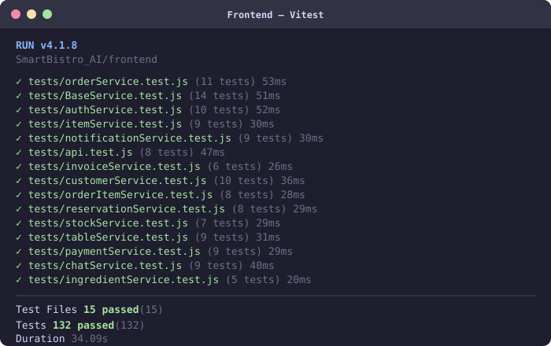

Order Orchestrator — Pipeline de 3 Agentes
Coordena a execução sequencial dos 3 agentes, com loop automático de correcção de stock

Entrega Intermédia
SmartBistro AI

Nome: Danilson Sanches
Número: upskill217
Formação: Frontend Javascript + IA (UPskill — Universidade de Lisboa)
Projecto Fullstack: SmartBistro AI — Sistema de gestão de restaurante com agentes de IA
Objectivo: Apresentação da arquitectura e implementação do projecto
Sistema completo de gestão de restaurante com inteligência artificial integrada. O backend serve de motor de processamento para pedidos em linguagem natural, chatbot e KDS.

SmartBistro AI
Express.js · MySQL · Groq SDK · SSE · JWT
| Camada | Tecnologia | Função |
|---|---|---|
| HTTP Server | Express.js | Routing, middleware, SSE |
| Base de Dados | MySQL (pool) | Persistência de pedidos, clientes, faturas |
| IA / LLM | Groq SDK | llama-3.3-70b + fila de fallback (6 modelos) |
| Autenticação | JWT + bcrypt | Tokens de 8h, passwords hasheadas |
| Streaming | SSE | Chatbot em tempo real palavra a palavra |
| Validação | Zod | Schemas de saída dos agentes AI |
| Testes | Vitest + Supertest | 261 testes de integração — todos os endpoints HTTP |

BaseAgentAI é a superclasse que todos os agentes estendem — define a temperatura, o modelo e o prompt base, orquestrando qual modelo Groq usar em cada fluxo de pedido.
| Agente | Temperatura | Papel |
|---|---|---|
| MaitreAgent | 0.4 (médio) | Interpreta linguagem natural → JSON estruturado para a BD |
| ChefAgent | 0.2 (baixo) | Verifica stock, cria sequência de preparação da cozinha |
| ManagerAgent | 0.3 (baixo) | Confirma fatura com dados pré-calculados em JS puro |
Multi-turn: histórico partilhado — Maître ajusta o pedido após feedback de stock do Chef.
Coordena a execução sequencial dos 3 agentes, com loop automático de correcção de stock
Gere o loop agêntico do chatbot — até 5 iterações por mensagem, com o LLM a decidir as funções a executar

19 funções disponíveis que o chatbot pode invocar durante a conversa para operar sobre a base de dados

O cliente faz um pedido em linguagem natural via chatbot, com resposta em streaming SSE e function calling
.png)
Pedido em linguagem natural interpretado pelos 3 agentes AI e persistido automaticamente na base de dados
.png)
Ponto de partida: o projecto começou com o modelo Gemini (Google AI) para todas as chamadas de LLM.
O problema: o pipeline cria 3 chamadas ao LLM por pedido (Maître + Chef + Manager) mais as chamadas contínuas do chatbot. Com o volume de testes e desenvolvimento, os limites de rate do Gemini gratuito tornaram-se um obstáculo recorrente.
Gemini — Limitações
Groq — Vantagens
Se o modelo falhar (429 / timeout / schema inválido), tenta automaticamente o seguinte — transparente para o utilizador.
const GROQ_MODEL_QUEUE = [
"llama-3.3-70b-versatile", // modelo principal
"meta-llama/llama-4-scout-17b-16e-instruct", // Llama 4 Scout — rápido
"qwen/qwen3-32b", // Qwen3 com <think>
"llama-3.1-8b-instant", // fallback leve
];
// 429 / 502 / 503 / timeout / "tool call validation failed" → tenta próximo
async function chatWithFallback(messages, options, queue, idx = 0) {
if (idx >= queue.length) throw new Error("Todos os modelos indisponíveis");
try {
return await groq.chat.completions.create({ model: queue[idx], ...options });
} catch (error) {
if (isRetryableGroqError(error) && idx < queue.length - 1)
return chatWithFallback(messages, options, queue, idx + 1);
throw error;
}
}Protege rotas com JWT. role_id 1 Admin role_id 2 Cliente.
export function verifyToken(req, res, next) {
const token = req.headers['authorization']?.slice(7);
req.user = jwt.verify(token, process.env.JWT_SECRET); // { id, role_id }
next();
}
export function requireRole(...roles) {
return (req, res, next) => {
if (!roles.includes(req.user?.role_id))
return res.status(403).json({ error: 'Acesso negado' });
next();
};
}
// Uso nas rotas
router.get('/me', verifyToken, getProfile);
router.get('/admin/users', verifyToken, requireRole(1), getAllUsers);
router.get('/invoices', verifyToken, requireRole(2), getMyInvoices);Factory que gera middlewares de validação de existência para qualquer entidade — evita repetir a verificação em cada controller.
// Factory: recebe uma função de BD e o nome da entidade
export function createExistsMiddleware(findFn, entityName) {
return async (req, res, next) => {
const resource = await findFn(req.params.id);
if (!resource)
return res.status(404).json({ error: `${entityName} not found` });
req[entityName.toLowerCase()] = resource; // disponível no controller
next();
};
}
// Uso — gerado uma vez, reutilizado em qualquer rota
const orderExists = createExistsMiddleware(getOrderById, 'Order');
const customerExists = createExistsMiddleware(getCustomerById, 'Customer');
const itemExists = createExistsMiddleware(getItemById, 'Item');
router.put ('/orders/:id', orderExists, updateOrder);
router.delete('/customers/:id', customerExists, deleteCustomer);
router.patch ('/items/:id', itemExists, updateItem);Cada camada isola e transforma o erro até entregar ao utilizador uma mensagem clara em português
.png)
Camada 2 do pipeline de erros. Transforma qualquer erro técnico do Groq num tipo estruturado com mensagem em português.
| Tipo | HTTP | Mensagem ao utilizador |
|---|---|---|
| TIMEOUT | — | "O assistente demorou demasiado... ⏱️" |
| RATE_LIMIT | 429 | "Limite de pedidos atingido... ⏳" |
| SERVICE_DOWN | 503 | "Serviço de IA temporariamente indisponível... 🔧" |
| AUTH_ERROR | 502 | "Erro de autenticação com o serviço de IA... 🔑" |
| NETWORK_ERROR | 502 | "Não foi possível ligar ao serviço de IA... 🌐" |
| INVALID_REQUEST | 400 | "Pedido não pôde ser processado... ✏️" |
SmartBistro AI
React 19 · Vite · Tailwind CSS 4 · React Router 7
SPA React com routing protegido por roles, service layer abstraído e integração SSE com o chatbot AI. Toda a interface segue abordagem mobile-first com dois layouts distintos por página.
| Tecnologia | Versão | Para quê |
|---|---|---|
| React | 19.2.7 | Framework UI — componentes e estado |
| Vite | 8.0.16 | Build tool + servidor de dev com proxy |
| Tailwind CSS | 4.3.0 | Estilos utilitários e responsividade |
| React Router | 7.16.0 | SPA routing com rotas protegidas |
| Chart.js + react-chartjs-2 | 4.5.1 | Gráficos doughnut e line no perfil |
| Framer Motion | 12.40.0 | Animações de entrada/saída |
| Vitest + jsdom | 4.1.8 | Testes unitários de todos os services |
Sem Redux / Zustand — usa Context API nativo · Sem Axios — usa fetch nativo + EventSource para SSE
O React Router está organizado em 3 níveis de acesso — todas as páginas carregadas com lazy() para reduzir o bundle inicial.
/ (público)
├── / MainPage ← cardápio + modais
└── /login LoginPage ← login dedicado
ProtectedRoute (requer JWT válido)
└── /perfil ProfilePage ← qualquer auth
AdminRoute (requer role_id === 1)
├── /dashboard DashboardPage
├── /orders OrdersPage
├── /kds KdsPage
├── /stock StockPage
├── /clientes ClientesPage
├── /menu MenuPage
├── /table TablePage
├── /faturacao FaturacaoPage
└── /relatorios RelatoriosPageAdminRoute — redireciona clientes para /perfil
export default function AdminRoute() {
const { user, loading } = useAuth();
if (loading)
return <TrophySpin />;
if (!user || user.role_id !== 1)
return <Navigate to="/perfil" />;
return <Outlet />;
}
// Lazy loading — App.jsx
const ClientesPage = lazy(() =>
import("@/pages/ClientesPage"));
<Suspense fallback={<PageLoader />}>
<Routes>...</Routes>
</Suspense>Estado de autenticação partilhado por toda a aplicação via Context API. No arranque valida o token guardado em localStorage contra o backend.
Fluxo de arranque e login
// Arranque — valida token guardado
useEffect(() => {
if (!token) { setLoading(false); return; }
authService.me(token)
.then(setUser)
.catch(() => {
localStorage.removeItem(TOKEN_KEY);
setToken(null);
})
.finally(() => setLoading(false));
}, []);
// Login
async function login(identifier, password) {
const data = await authService.login(identifier, password);
localStorage.setItem(TOKEN_KEY, data.token);
setToken(data.token);
setUser(data.user);
return data.user; // redireciona por role
}O que o contexto expõe
const {
user, // objecto completo
token, // JWT string
loading, // validação inicial
login, // POST /auth/login
register, // POST /auth/register
logout, // limpa localStorage
updateUser, // merge parcial (sem logout)
} = useAuth();Modal flutuante acessível em todas as páginas. Texto gerado palavra a palavra via SSE com suporte a retry automático.
Componentes
| Componente | Responsabilidade |
|---|---|
ChatUI.jsx | Orquestrador — estado, SSE, histórico |
ChatBubbleUI.jsx | Renderização mensagens user/bot |
ChatInputUI.jsx | Input de texto + submissão |
ChatHeaderUI.jsx | Cabeçalho + histórico + fechar |
ChatHistory.jsx | Histórico agrupado por data |
ProviderErrorCard.jsx | Card de erro com botão retry |
Fluxo SSE
Utilizador escreve → Submit
↓
chatService.sendMessageToBotStream(...)
POST /chat/message/stream
Eventos recebidos:
event: message → onChunk(text)
data: {"text":"Olá!"} ↑ acrescenta fragmento
event: done → onDone(data)
data: {success, functionResults}
event: rate_limit → onDone({providerError:true})
→ mostra ProviderErrorCardQuando o backend envia um evento SSE de erro, 4 ficheiros tratam de o receber, interpretar e apresentar ao utilizador.
| Ficheiro | Papel | Saída |
|---|---|---|
chatService.js | Lê SSE, detecta evento de erro | onDone({ providerError:true }) |
ChatUI makeOnDone | Actualiza estado da mensagem | msg.providerError = { errorType, message } |
ChatUI render | Decide o que renderizar | <ProviderErrorCard> em vez de texto |
ProviderErrorCard | Mostra o erro visualmente | Card com ícone, cor, mensagem PT e retry |
handleRetry — remove a mensagem do bot e reenvia a última do utilizador.
chatService.js — detecta evento de erro
else if (
event === "rate_limit" ||
event === "service_unavailable" ||
event === "auth_error" ||
event === "network_error"
) {
if (onDone) onDone({
...parsed,
success: false,
providerError: true,
});
}
// ChatUI.jsx — makeOnDone
if (!payload?.success) {
setMessages(p => p.map(m =>
m.id === botMsgId ? {
...m, text: "",
providerError: {
errorType: payload.errorType,
message: payload.message,
}
} : m
));
}Camada visual de erros do chatbot. O ERROR_CONFIG em providerErrorCardUtils.js mapeia cada tipo para ícone, cor e título em português.
| Tipo | Evento SSE | Ícone | Título (PT) | Retry |
|---|---|---|---|---|
RATE_LIMIT | rate_limit | ⏳ | Limite atingido | Sim |
SERVICE_DOWN | service_unavailable | 🔧 | Serviço em baixo | Sim |
AUTH_ERROR | auth_error | 🔑 | Erro de autenticação | Não |
NETWORK_ERROR | network_error | 🌐 | Sem ligação | Sim |
INVALID_REQUEST | invalid_request | ✏️ | Pedido inválido | Não |
TIMEOUT | catch AbortError | ⏱️ | IA indisponível | Sim |
UNKNOWN | fallback | 🤖 | IA indisponível | Sim |
Erros HTTP antes do stream (4xx/5xx) são também convertidos via httpStatusToErrorType(status) — ex: 429 → RATE_LIMIT.
Abordagem mobile-first com dois layouts distintos por página e padrões de UX consistentes em toda a aplicação.
Padrões de UX
| Padrão | Implementação |
|---|---|
| Carregamento | Spinner enquanto dados carregam |
| Confirmação destrutiva | Modal antes de eliminar |
| Auto-refresh | setInterval 30s em páginas operacionais |
| Pesquisa | Filtragem em tempo real (client-side) |
| Paginação | Componente partilhado, tamanho configurável |
| Animações | Framer Motion em modais e tabs |
Mobile vs Desktop
// Mobile: cards (sm:hidden)
<div className="sm:hidden grid grid-cols-5">
{items.map(item => <MobileCard />)}
</div>
// Desktop: tabela (hidden sm:grid)
<div className="hidden sm:grid">
<table>...</table>
</div>Navegação: Header com links em desktop · BottomNav com tabs em mobile
Dark/Light mode: ThemeContext + classes Tailwind dark:
SmartBistro AI
Vitest · Supertest · jsdom
Backend — Testes de Integração
| Aspecto | Detalhe |
|---|---|
| Framework | Vitest — suporte nativo a ES Modules |
| HTTP | Supertest — requisições sem servidor a escutar |
| Mocks | vi.mock(db.js) + vi.mock(services/index.js) |
| Isolamento | BD e JWT 100% mockados — sem dependências externas |
| Resultado | 19 ficheiros · 261 testes · todos os controllers |
Frontend — Testes Unitários
| Aspecto | Detalhe |
|---|---|
| Framework | Vitest + ambiente jsdom |
| Mocks | vi.mock(api.js) · vi.spyOn(fetch) |
| Padrão | Cada service testado com mock da camada de transporte |
| Resultado | 16 ficheiros · todos os services do frontend |
| Setup | setup.js — vi.restoreAllMocks() após cada teste |
19 ficheiros · 261 testes · Vitest + Supertest · todos os controllers e middlewares

16 ficheiros · Vitest + jsdom · todos os services do frontend

Todas implementáveis sem APIs externas — apenas BD, lógica de backend e tecnologias já no projecto
IA & Experiência do Cliente
Operações & Plataforma
SmartBistro AI · Danilson Sanches · upskill217